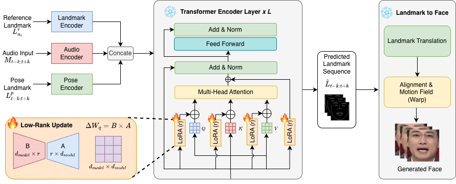

Audio-driven talking face generation has achieved significant progress, but most pretrained models are optimized for high-resource languages and are costly to fully fine-tune. This paper proposes LoRA-Talk, a parameter-efficient adaptation framework for Vietnamese talking face generation based on the pretrained IP-LAP architecture. Instead of updating the full Transformer backbone, LoRA-Talk freezes the pretrained model and injects Low-Rank Adaptation modules into the Transformer attention projections for speech-driven facial landmark prediction. The framework uses Mel-spectrogram audio features and facial landmark representations to model Vietnamese speech-related mouth motion. Experimental results on a constructed Vietnamese audio-visual dataset show that LoRA-Talk improves landmark prediction accuracy, mouth-shape reconstruction, mouth-opening dynamics, and temporal consistency compared with the original IP-LAP pretrained landmark generator. Ablation studies further demonstrate the effects of loss design, LoRA rank, and adapter insertion position. Overall, LoRA-Talk provides an effective and computationally efficient solution for adapting pretrained talking face models to low-resource Vietnamese speech.
Keywords: Talking Face Generation, Low-Rank Adaptation (LoRA), Parameter-Efficient Fine-Tuning, Vietnamese Speech, Transformer, Audio-Driven Facial Animation
Overall architecture of the LoRA Talk Framework

Video Demonstrations
Demo 1 — Normal
Demo 1 — Slow
Vietnamese
Vâng dưới góc độ pháp lý, luật sư có thể đánh giá cụ thể hơn các chế tài xử lý hiện nay
English
Yes, from a legal perspective, the lawyer can provide a more specific assessment of the current sanctions and penalties.
Demo 2 — Normal
Demo 2 — Slow
Vietnamese
Giữa những cái giai điệu tự hòa, với những cái giọng hát mà
English
Amidst those self-harmonizing melodies, with those singing voices
Demo 3 — Normal
Demo 3 — Slow
Vietnamese
Trong thời gian ngắn, đã làm rõ.
English
In a short period of time, it has been clarified.
Demo 4 — Normal
Demo 4 — Slow
Vietnamese
Đây là cái nguyện vọng hết sức chính đáng của toàn thể nhân dân, chúng ta không thể để
English
This is the entirely legitimate aspiration of all the people, we cannot allow